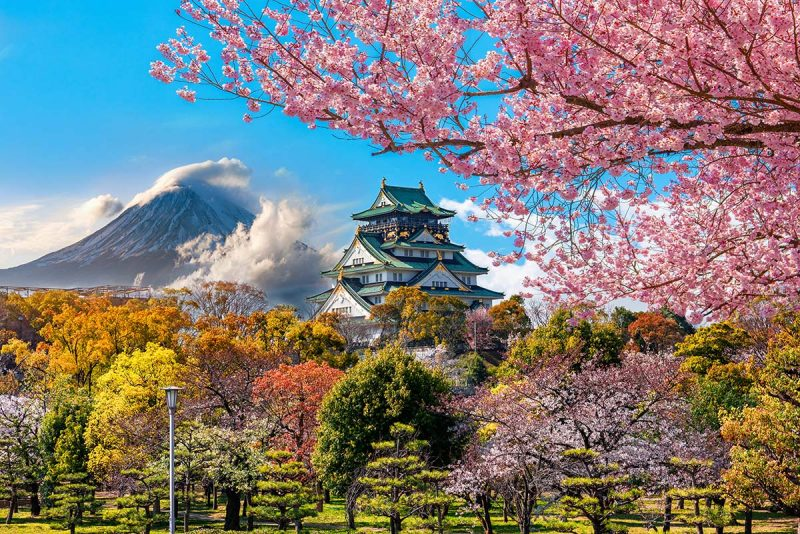
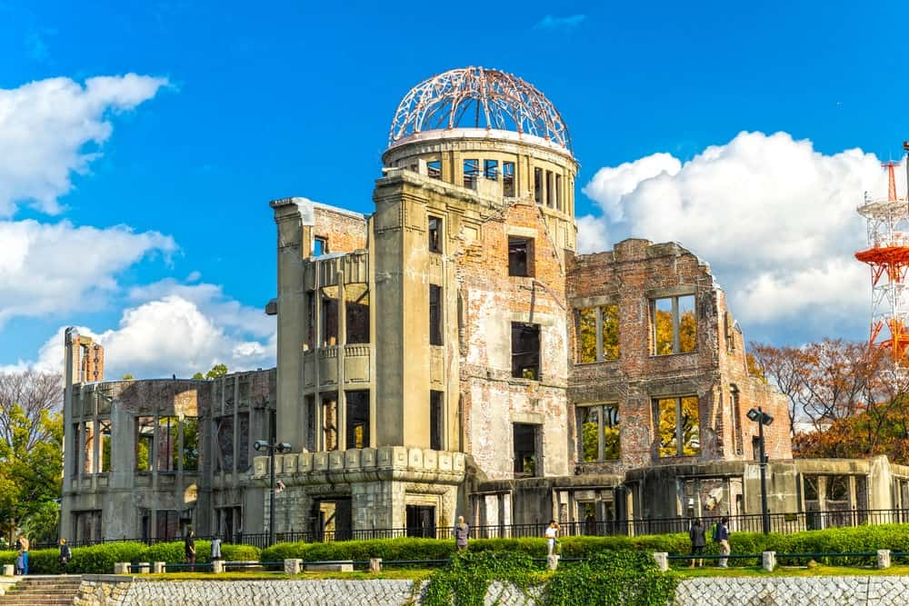

En este viaje vamos a ir a 4 lugares diferentes:Tokio,Osaka,Kioto y Hiroshima.
Tokio, la ajetreada capital de Japón, mezcla lo ultramoderno y lo tradicional, desde los rascacielos iluminados con neones hasta los templos históricos. El opulento santuario Shinto Meiji es conocido por su puerta altísima y los bosques circundantes. El Palacio Imperial se ubica en medio de grandes jardines públicos. Los distintos museos de la ciudad ofrecen exhibiciones que van desde el arte clásico (en el Museo Nacional de Tokio) hasta un teatro kabuki reconstruido (en el Museo Edo-Tokyo).
Osaka es una gran ciudad portuaria y un centro comercial en la isla de Honshu de Japón. Es famosa por su moderna arquitectura, su vida nocturna y la abundante comida callejera. El castillo de Osaka del shogunato del siglo XVI, que ha sido restaurado varias veces, es un importante monumento histórico. Está rodeado de un foso y un parque con árboles de ciruelo, durazno y cerezo en flor. Sumiyoshi-taisha se encuentra entre los templos shinto más antiguos de Japón.

Kioto, que alguna vez fue la capital de Japón, es una ciudad de la isla de Honshu famosa por sus numerosos templos budistas clásicos y sus jardines, palacios imperiales, santuarios Shinto y casas de madera tradicionales. También es conocida por tradiciones formales, como las comidas kaiseki, que constan de varios platos de preparaciones distintivas, y las geishas, artistas femeninas que se encuentran comúnmente en el distrito Gion.

Hiroshima, una ciudad moderna en la isla Honshu de Japón, fue destruida en gran parte por una bomba atómica durante la Segunda Guerra Mundial. Actualmente, el Parque Memorial de la Paz de Hiroshima conmemora el evento de 1945. En el parque, se encuentran las ruinas de la Cúpula Genbaku, uno de los pocos edificios que permaneció en pie cerca de la zona de impacto. Entre otros sitios destacados, se encuentran Shukkei-en, un elegante jardín japonés, y el Castillo Hiroshima, una fortaleza rodeada de un foso y un parque.
